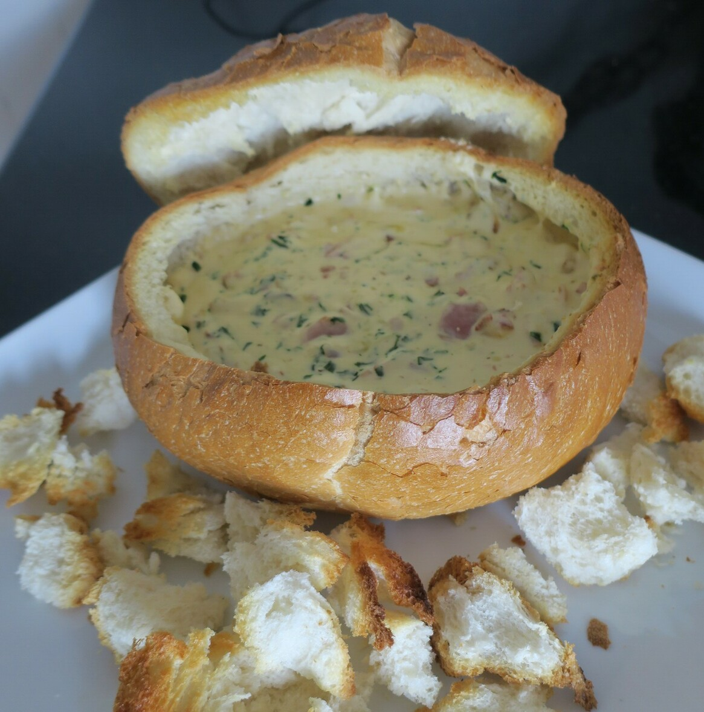

Cob Loaf

Preheat oven to 180
500gcob loaf
Cut the top of cob loaf off to form lid. Scoop bread from centre of loaf. Tear or roughly chop bread pieces.
1 tblolive oil
Heat olive oil in a large frying pan.
1 smallonion200gshortcut bacon rashers
Add onion and shortcut bacon rashers.
Cook, stirring, for 5 minutes or until bacon is browned and onion has softened.
250gcream cheese2/3 cupcream2/3 cupsour cream1 1/2 cupscheddar cheese2 tablespoonschives
Add cream cheese , cream, sour cream, grated cheddar cheese and chopped chives .
somesalt
Mix until combined. Season with salt and @pepper.
Spoon mixture into loaf. Arrange lid, bread pieces and sliced baguette in a single layer around loaf.
Bake for 20 minutes or until lightly toasted